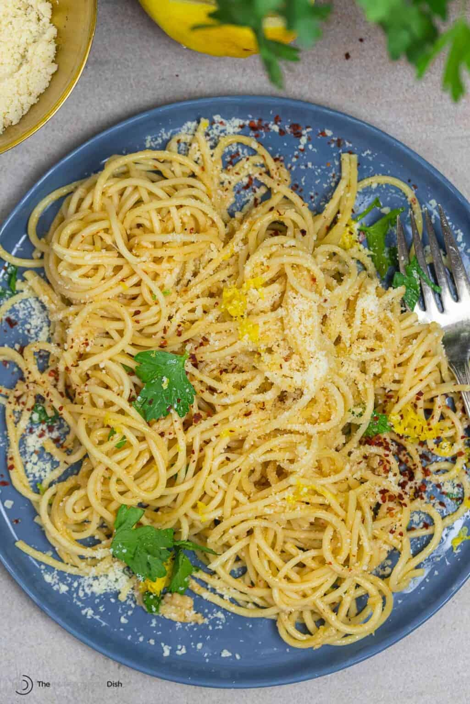

Lemon Pasta

Flavorful, tangy, and light, this simple lemon pasta without cream is the perfect meal in 15 minutes or less! With good extra virgin olive oil, fresh garlic and a good sprinkle of Parmesan cheese.
1 lbspaghetti⅓ cupextra virgin olive oil, more if needed6large garlic cloves, minced½ tspcrushed red pepper flakes, more to your liking- Zest of 2 lemons
- Juice of 2 lemons
½cup fresh parsley, chopped- kosher salt and freshly ground black pepper to taste
½ cupParmesan cheese to finish, more to your liking, optional
Bring a pot of water to a boil and salt the water well. Cook the spaghetti according to package instructions to al dente (about 10 minutes). Reserve 1 cup of the pasta cooking water before draining.
When the pasta is nearly done (about 7 minutes into cooking it), heat the olive oil in a large skillet over medium heat. Add the minced garlic and crushed red pepper flakes, and cook, stirring until fragrant, about 30 seconds. Add the lemon juice and about ¼ cup of the pasta cooking water for now.
Drain the pasta and add it to the skillet and toss over medium heat.
Remove the skillet from the heat and add the parsley, lemon zest and grated parmesan. Season with kosher salt and black pepper to taste. Toss again to combine, and if needed, add a little bit more of the pasta cooking water and a drizzle of extra virgin olive oil. Serve immediately!